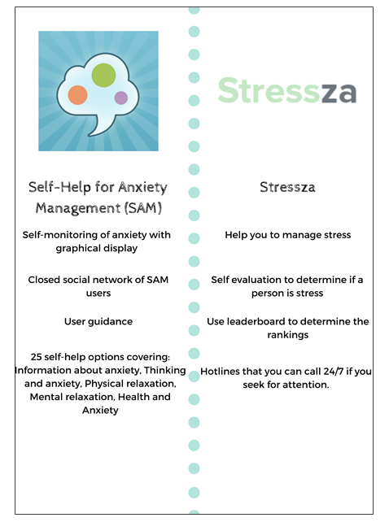
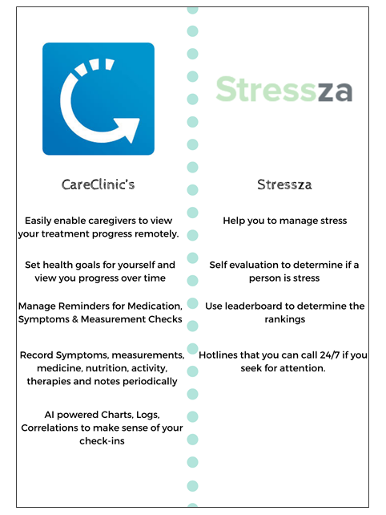

Why there is a need for your application?
This application was made to reduce the stress of the students. By providing them games that they can enjoy and learn at the same time especially on this situation, to help the students relax for a little bit. This app also helps the students to reduce the symptoms of depression and anxiety. The app can also be used with the teacher to monitor the behaviours and feelings of the students that have low performance on school. This application is not only for students, it is for everyone like company workers etc. to remove their stress for a while working.
Who will benefit the app?
The individuals that will benefit from this application are the students who suffer from mental illnesses. Through this application will be aware of how should they manage their stress efficiently. This will prove that if individuals have severe cases or fewer cases of mental illness they can know that they are indeed suffering and in need of consultation or emotional support from someone.
Self-Help for Anxiety Management (SAM) anxiety app and Stressza
CareClinic’s and Stressza
